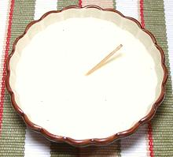

 |
Besciamella / Béchamel SauceBesciamella (Italy) / Sauce Béchamel (France) | ||||
| Makes: Effort: Sched: DoAhead: |
2 cups ** 25 min Yes |
This Italian sauce, formerly called Balsamella, was adopted by the French under the name Béchamel. There is disagreement as to how to keep it from getting lumps, see Note-1, and see Note-2 on thickness | |||
|
|
2-1/2 4 6 1/3 1/4 1/16 |
c T T t t t |
Milk Butter (3) Flour Salt Pepper, white Nutmeg |
Make: - (25 min)
|